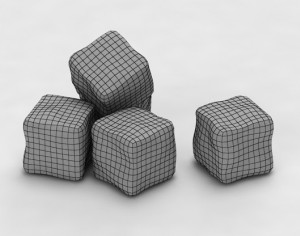
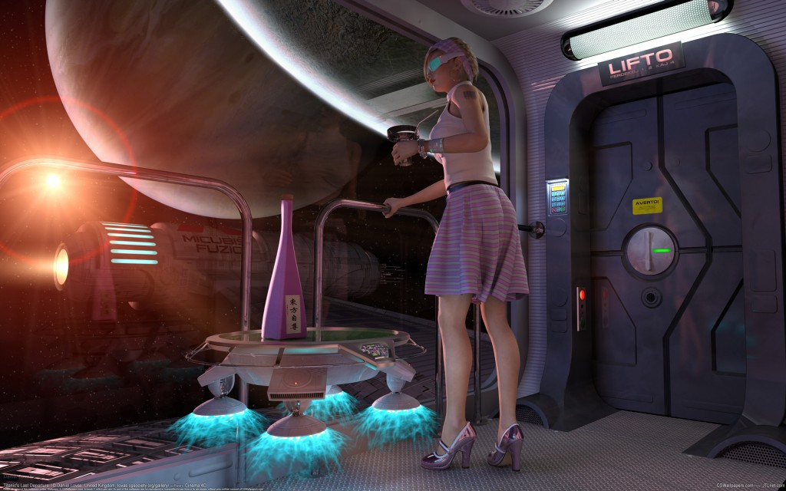

Какво съм аз?
- Борислав Станимиров aka Боби aka iboB
- Програмирам от 17 години
- Професионално от 11
- Игри от 8
- Ще водя fast-track курс в SoftUni от есента
Въпроси към публиката
- Някой писал ли е игри?
- Някой писал ли е 3D игри?
- А кода в играта от ниско ниво?
- Ще ме закара ли някой до София?
Какво не е тази лекция?
- Изчерпателна
- или даже образователна
- и не отговаря на заглавието
- Няма да говорим за бизнеса
- Няма да става дума за дизайна или игрите като игри
Какво е тази лекция?
- Ще си говорим за средни и големи класически игри
- Как се правят игри? ... повърхностно
- Какво има в игрите? ... повърхностно
- Ще препуснем през един тон материал
- Почти всяка точка в тази лекция заслужава собствена лекция
- Много заслужават собствен курс
- Ще видим няколко (кратки) примера
- Целта е да видим какво става в игрите, за да не ни е страх.
Как се правят игри?
- Правенето на игри не е като играенето на игри
- Игрите са софтуер като всеки друг
- Предизвикателства пред правенето на игри
- Срокове
- Ефективност
- Поддръжка
- Полипарадигмалност
Как се правят игри?
- От много роли (но не задължително много хора)
- Скучната част
- Дизайн, арт, шаренийки, звуци
- Интересната част
- Програмиране
- Математика
- Архитектура
- От всичко по много
Как се правят игри?
- Езици за програмиране
- С++
- Други
- Скриптови езици
- А как не се правят игри?
- Без планиране
- Без дизайн
- Без бира - и тук имам предвид екип
Архитектура на игрите
- Безкраен цикъл от фреймове
- Презентация - графика, звук, вибрации,... миризма
- Симулация - физика, изкуствен интелект, естествен интелект (потребителски вход)
- Други аспекти на играта
- Състояние (state)
- Обекти - отговарящи на всеки аспект
- Сериализация
- Оптимизация
Кодът на една игра
main()
{
Load();
while(IsPlaying())
{
ProcessInput(); // клавиатура, мрежа
Simulate(); // физика, изкуствен интелект
Present(); // графика, звуци...
}
Save();
}
Единственият код в лекцията. Насладете му се.
Математика на игрите
- Линейна алгебра и аналитична геометрия
- Вектори
- Матрици
- Афинни (и не чак толкова афинни) трансформации
- Смяна на координатни системи
- Разтягане и изкривяване
- Обръщане
- Композиция (и декомпозиция на) матрици
- Кватерниони
- Лъчи
- Равнини
- Проверка за пресичане
- и още много неща
Математика на игрите
- Анализ
- Обичайните работи
- Диференциални уравнения
- Числени методи. Числени методи. Числени методи (и числени методи)
- Числени методи
- ... и, естествено, дискретна математика
(и числени методи)
Графика 101
- Видеокартата - стероиди на стероиди
- D3D (DirectX) и OpenGL - да си говорим с нея
- Проектиране на полигони
- Вертекси и атрибути - позиция, нормала...
- Вертексни и пикселни шейдъри

Графика 102
- Камера - как гледаме на света
- Процедурна геометрия - вода, терен?
- Текстури - гъзарска дума за картинки
- Светлини - просто абстрактни параметри
- Анимации
- ...и скелети
- Environment mapping - как светът ни влияе
- Сенки - какво вижда слънцето
Графика 103
- Culling - махане на обекти
- Полу-прозрачност - немахане на обекти
- Post processing - отгоре на всичко
- Помощни визуализации - debugging на око
- Нива на детайл - ако виждаш точка, рисувай точка
- Потребителски интерфейс

Пено, качвай се у LIFTO!
Трололо-лоло: Звуци
- Най-подценяваната подсистема
- Звуци в света
- На моменти прилича малко на графиката
- Скриване на звук зад пречка
- Среда, бъл-бъл-бъл, други ефекти
- Музика
- За щастие има много готови решения
Симулация 101 - Физика
- Фалшива физика - често е отлично решение
- Истинска физика
- Математическият анализ не е всичко - светът е голям
- Фази на физичната симулация - едра и дребна
- Физични тела
- Физиката в помощ на графиката - какво виждаме
- Физичен хардуер
- Физични библиотеки
Симулация 102 - Изкуствен интелект
- Често е подценяван :(
- Конкретен или "истински"? (Отг. Конкретен)
- "Sence, think, act (you must)" - Йода
- Стейт машини
- Decision/Behavior дървета
Обекти
- Простите обекти не работят

Обекти
- Разни подсистеми, разни идеали
- Композицията бие наследяването
- Entity-component-system
- Аз правя подобна библиотека
- Boost.Mixin: Изфук, изфук, фръц, фръц
Още... неща
- Потребителски вход
- Клавиатура/мишка
- Джойстик
- Touchscreen
- PlayStation®Move и други индианци
- Мрежа
- Throughput... лесно
- Latency... трудно
- Синематики
- Асети, защита, и още и още
И това не е всичко...
- Помощни инструменти
- Паралелизация
- Мултиплатформеност
- Трябва да излезе за коледа
- Поддръжка? Updates?

Какво ни дава един енджин?
- Винаги графика и обекти
- Често мултиплатформеност
- Почти винаги начин да се свържем със съществуващи библиотеки
- Често помощни инструменти
- Рядко звук
- Много рядко нещо друго
Game-maker енджини
- Unity и UDK
- Игра без програмисти? Почти
- Всичко на едно място
- Няма С++. Ура!